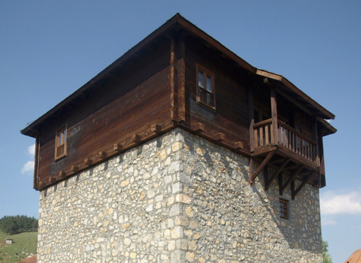
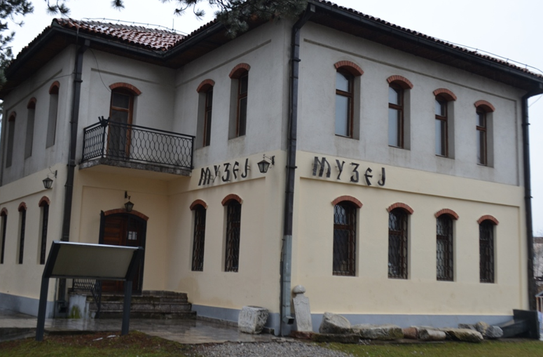

Sahat-kula u Podgorici nalazi se na Trgu Bećir-bega Osmanagića, u naselju Stara Varoš. Visoka je 16 metara i predstavlja jednu od rijetkih podgoričkih građevina koje su preživjele razorna njemačka bombardovanja tokom Drugog svjetskog rata.
Pocetna Zavičajni muzej u Rožajama osnovan je 1991. godine s ciljem očuvanja i predstavljanja kulturne baštine rožajskog kraja. Radovi na izgradnji nove muzejske zgrade započeli su 2001. godine, a sam objekat je projektovan po uzoru na čuvenu Ganića kulu iz 1798. godine – značajan primjer tradicionalne arhitekture ovog područja. Upravo ta kula, kao prepoznatljiv simbol grada, danas krasi i zvanični grb opštine Rožaje.
Muzejski fond podijeljen je u tri osnovne tematske cjeline: tekstil, pokućstvo i posuđe. Predmeti iz zbirke odlikuju se visokim stepenom očuvanosti i bogatom izradom, kako u pogledu tehnike, tako i materijala. Kolekcija obuhvata razdoblje od 18. do 20. vijeka i vjerno oslikava svakodnevni život, način stanovanja, odijevanja, kao i umjetničke i zanatske izraze lokalnog stanovništva.
U postavci su jasno prepoznatljivi elementi islamske tradicije, ali i uticaji različitih kultura i civilizacija koje su kroz istoriju ostavile trag na ovom prostoru. Time Zavičajni muzej u Rožajama ne samo da čuva sjećanje na prošlost, već i svjedoči o bogatom i raznovrsnom kulturnom nasljeđu ovog kraja.
Zavičajni muzej u Bijelom Polju, osnovan 1957. godine, predstavlja čuvara bogate istorijske i kulturne baštine ovog kraja. Njegova stalna postavka prati razvoj bijelopoljskog područja od praistorije, preko rimskog i srednjovjekovnog perioda, osmanske epohe, pa sve do savremenog doba.
Posebno mjesto u muzeju zauzima etnološka zbirka, koja kroz brojne autentične predmete prikazuje svakodnevni život ljudi u prošlim vremenima. Posjetioci mogu vidjeti i vjerno rekonstruisanu unutrašnjost tradicionalne kuće iz ranijih vijekova, što pruža uvid u način života, običaje i kulturu stanovanja tog vremena.
Među najvrednijim eksponatima ističe se srednjovjekovni srebrni novčić, jedan od prvih oblika novca korišćenog na ovom prostoru. U muzeju se takođe nalazi impresivna zbirka starog oružja, kao i raznovrsni zanatski alati koji svjedoče o vještinama i svakodnevici minulih generacija.Značajan segment čini i kolekcija umjetničkih djela, među kojima su slike i ikone koje pripadaju zaostavštini čuvene bijelopoljske slikarske porodice Lazović, ostavljajući neizbrisiv trag u kulturnom identitetu ovog kraja.
Na brdu iznad Redžepagića džamije u Plavu uzdiže se Redžepagića kula, najstariji i arhitektonski najzanimljiviji stambeno-odbrambeni objekat u ovom kraju. Prema zvaničnim podacima, kula datira iz 1671. godine, iako postoje pretpostavke da je podignuta i ranije.Donji dio građevine čine dva kamena nivoa, sa zidovima debljim od jednog metra, što jasno ukazuje na njenu nekadašnju odbrambenu funkciju. Iznad njih se uzdiže drveni sprat, ukrašen isturenim balkonima, karakterističnim za tradicionalnu arhitekturu ovog područja. Spratovi su međusobno povezani unutrašnjim drvenim stepenicama, a sama kula je u svoje vrijeme bila u potpunosti prilagođena za stanovanje. U prizemlju su se nalazile konjušnica i magacin, dok su gornji spratovi služili kao stambeni prostor. Danas Redžepagića kula ima muzejsku namjenu – u njenim prostorijama smještena je zavičajna etnografska zbirka, koja čuva brojne autentične predmete i svjedoči o načinu života, običajima i kulturi nekadašnjeg plavskog kraja.
Polimski muzej u Beranama čuva bogato kulturno nasljeđe regiona Gornjeg Polimlja, obuhvatajući teritorije opština Berane, Plav, Andrijevica, Rožaje i Bijelo Polje. Kroz brojne zbirke i izložbene postavke, muzej nastoji da prikaže istorijski razvoj ovog kraja – hronološki, teritorijalno i tematski. Muzej je osnovan 15. februara 1955. godine, odlukom Narodnog odbora za Srez beranski, kao regionalna ustanova kompleksnog tipa. U početku se nalazio u zgradi prve svetovne škole, smještenoj kod manastira Đurđevi Stupovi. Tokom svoje istorije prošao je kroz više organizacionih promjena, a od 1992. godine djeluje kao samostalna javna ustanova, čiji je osnivač Opština Berane. Od 1996. godine, Polimski muzej je smješten u adaptiranoj zgradi nekadašnjeg “Doma trezvenosti”, zadužbine kralja Aleksandra I Karađorđevića, izgrađene početkom 20. vijeka za potrebe Trezvenjačke omladine i Sokolskog društva.
Stalna muzejska postavka podijeljena je u tri osnovna odjeljenja:
• Arheološko odjeljenje
• Istorijsko odjeljenje
• Etnografsko odjeljenje
Posebno su vrijedne zbirke fotografija, oružja, numizmatike, heraldike, kao i umjetnička kolekcija, koju čine crkvene knjige, ikone i likovna djela različitih autora. Ukupni muzejski fond broji oko 10.000 predmeta, koji svjedoče o bogatom i složenom istorijsko-kulturnom nasljeđu Gornjeg Polimlja. Pored izložbene djelatnosti, muzej aktivno učestvuje u zaštiti i istraživanju kulturnih dobara, bavi se izdavačkom i kulturno-edukativnom djelatnošću, kao i investicionim održavanjem objekata od značaja.